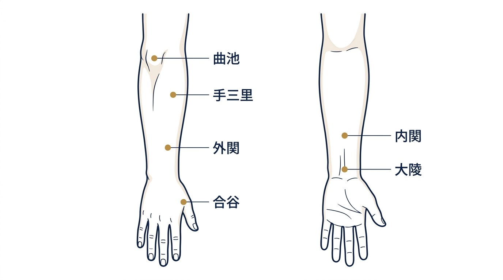

母指CM関節症の鍼灸
親指の付け根のCM関節で軟骨摩耗や靭帯の緩みが起き、つまむ・握る動作で痛みや変形が生じる疾患です。


院長YouTube解説・関連動画
母指CM関節症の症状は、親指の痛みや動きの制限
母指CM関節症の症状は、親指の痛みや動きの制限です。瓶の蓋を開ける時など、親指に力を入れて摘まんだり掴んだり握ったりする動作を行った時に痛みが現れます。
病気が進むと、関節が亜脱臼して骨が出っ張ってきます。 母指が開きにくくなり、MP関節が反って、IP関節が曲がって伸びにくい状態になることもあります。
母指CM関節症は、親指の基底部にある母指CM関節に関連する病状で、この関節の軟骨の摩耗や損傷が原因で起こります。以下に、母指CM関節症の典型的な症状を詳しく説明します。
1. 痛み
親指の根元、特に手のひらの側にあるCM関節周辺で痛みを感じます。この痛みは、親指を使う動作によって悪化することが一般的です。
2. 腫れと圧痛
関節周辺の腫れや触ると痛むことがあります。この腫れは、関節内の炎症や関節周囲の組織の反応によるものです。
3. こわばり
親指の動きが制限されることがあり、特に朝や長時間動かさなかった後にこわばりを感じることがあります。
4. 力の低下
親指の使用時に力が入りにくくなり、物を掴む力や握力が低下します。これは日常生活の多くの動作に影響を及ぼし、物を持つことや文字を書くことが困難になることがあります。
5. 運動範囲の制限
関節の損傷や痛みにより、親指を動かす範囲が制限されることがあります。特に、親指を他の指に近づける動作や親指を手のひらから遠ざける動作が困難になることがあります。
6. クリック音やこすれる感じ
関節を動かす時にクリック音がすることや、骨がこすれ合うような感覚を感じることがあります。これは、関節の軟骨が摩耗して骨同士が直接接触していることが原因です。
7. 変形
進行した場合、親指の基底部に変形が見られることがあります。これは、関節の不安定性や軟骨の摩耗による関節の変形が原因です。
母指CM関節症を改善するために1番大事なことは、安静にすることです。テーピングや固定装具などを使って、なるべく負担をかけないようにしましょう。母指CM関節は日常生活を送る上でよく使う部分のため休ませることが大事なのです。
負担をかけないように気をつけて休ませることで、炎症が鎮まって痛みが落ち着いてきます。痛みが強い場合は消炎鎮痛剤の湿布や塗り薬、内服薬などを使うこともあります。
母指CM関節症の改善方法は、症状の重さや日常生活への影響度に応じて異なります。改善の主な目的は、痛みの管理、関節機能の維持、改善、日常生活の質の向上です。以下に、一般的な改善法を紹介します。
1. 保存的方右方
活動の調整: 特定の活動や動作が痛みを引き起こす場合、それらを避けるか、異なる方法で行うように調整します。
物理的方法: 専門家が指導する特定の運動により、親指周りの筋肉を強化し、関節の柔軟性を高めることができます。
装具の使用: 親指を安定させ、関節にかかる負担を軽減するためのサポートやスプリントの装着が有効です。特に夜間や特定の活動時に使用することで、痛みの軽減に役立ちます。
薬: 炎症や痛みを軽減するために、非ステロイド性抗炎症薬（NSAIDs）が処方されることがあります。重度の痛みの場合は、ステロイド注射が関節内に直接投与されることもあります。
2. 手術
保存的方法で十分な改善が見られない場合や、関節の損傷が進行している場合には、手術的治療が検討されます。手術の種類には以下のようなものがあります。
関節形成術: 損傷した軟骨を取り除き、関節面を滑らかにすることで痛みを軽減し、関節の動きを改善します。
関節固定術: 関節の動きを止めるために、関節を固定します。これにより痛みは軽減されますが、関節の動きは失われます。
関節置換術: 損傷した関節を人工関節に置き換える手術です。関節の動きを保持しつつ、痛みを軽減します。
関節切除術: 損傷した関節の一部を切除し、周囲の組織で隙間を埋めることで、痛みを軽減し、一定の動きを保持します。
手術の選択は、年齢、活動レベル、症状の重さ、および関節の損傷の程度に基づいて決定されます。改善法を選択する際には、専門医との詳細な相談が重要です。手術の後のリハビリテーションも、機能回復には欠かせない要素です。
母指CM関節症の改善において、薬は痛みや炎症の管理に役立ちます。使用される薬剤とその使用場面について以下に詳しく説明します。
1. 非ステロイド性抗炎症薬（NSAIDs）
使用される薬: イブプロフェン、ナプロキセン、ディクロフェナクなど。
使用場面: NSAIDsは、炎症を抑え、痛みを軽減するために一般的に使用されます。母指CM関節症による軽度から中等度の痛みの場合、経口での摂取または局所的に塗布する形で使用されます。
2. ステロイド注射
使用される薬: コルチコステロイド（例: トリアムシノロン）
使用場面: NSAIDsで十分な痛みの軽減が得られない場合や、関節の炎症が顕著な場合に、ステロイド注射が検討されます。関節内に直接投与することで、炎症と痛みを効果的に軽減します。しかし、ステロイド注射は使用回数に限りがあり、長期的な使用は関節の損傷を進行させる可能性があるため、慎重に使用されます。
3. 局所鎮痛薬
使用される薬: カプサイシン軟膏やリドカインパッチなど。
使用場面: 関節の痛みを局所的に管理するために使用されます。カプサイシン軟膏は痛みの伝達をブロックすることで効果を発揮し、リドカインパッチは局所麻酔作用により痛みを軽減します。これらは、特に皮膚に直接適用する形で使用され、痛みの軽減を目的としています。
4. 鎮痛薬
使用される薬: アセトアミノフェン（パラセタモール）
使用場面: 炎症を伴わない痛みの管理にアセトアミノフェンが用いられることがあります。NSAIDsを使用できない場合の代替として、またはNSAIDsと併用して痛みを管理します。
これらの薬は、母指CM関節症に伴う痛みや炎症を緩和するために有効ですが、改善の計画は具体的な状況や症状の重さに基づいて、専門家によってカスタマイズされる必要があります。
特に薬での改善を開始する前には、副作用や他の医薬品との相互作用について医師に相談することが重要です。また、薬物はあくまで症状の緩和を目的としており、根本的な原因に対処するためには、物理的な方法や場合によっては手術などの他の改善方法が必要になります。
母指CM関節は、手の甲を上に向けた時、親指から手首に向けての輪郭を見て、手首のやや末梢でくの字に曲がっているところにあります。
このくの字の頂点で強い突出が見られる場合、関節のかみ合わせが悪くなっているというサインになります。
くの字の頂点を圧迫した時に痛みが起きたり、瓶の蓋を開けようとしたとき親指の付け根から手首の親指側に痛みが起きたりする場合は、母子CM関節症を発症している可能性があります。
しかし、母子CM関節症の症状は個人差があります。関節の大きな変形が起こっていても痛みが現れないケースや小さな変形で痛みが現れるケースなど人によって症状に差があるのです。
母子CM関節症に効果的なツボ
魚際は、喉や肺の熱を緩和し呼吸を楽にする働きや、胃の不調や手から肩にかけてのだるさを和らげる働きがあります。押すことで血流が良くなるため、指の痛みにも役立ちます。
イライラしている時に刺激をすると呼吸を整えてくれる効果があるため、気持ちを落ち着かせる効果もあります。
陽渓というツボの名前の由来は、手の甲は「陽」に属していること、筋と筋の間のくぼみを「渓」ということです。
陽渓は、主に手首の関節の病気の改善に役立ちます。肩や腕、肘や手関節の痛みやしびれ、片麻痺などに使われます。他にも、頭痛や耳鳴り、難聴、のどの痛みや腫れ、歯痛、目の充血や痛みなどにも有効です。
陽池は自律神経のバランスを調整する効果があります。手足の末梢神経の血行を促す効果もあるため、肌荒れや肩凝りにも有効です。
他にも、リウマチや腕や手首などの冷え、便秘、頭痛、頭のふらつき、耳鳴り、目の痛み、咽喉の腫れや痛み、手首の痛み、口の乾燥などに効果的です。
ツボの位置と押し方
解谿は、足首の関節の前で、内くるぶしと外くるぶしを結んだ線の真ん中あたりにあるくぼんでいる場所にあります。
押すときは、両手で足首を持ち両手の人差し指と中指を使って押します。かかとを手のひらで包むようにしながら親指を使って押す方法でも押しやすいです。
大鐘は、内くるぶしとアキレス腱との間にあるツボです。アキレス腱の際にあります。
押した時に痛みが強い場合は、痛みを無理して押す必要はありません。息を吐きながら、親指でゆっくりと押していきましょう。
商丘は、足の内くるぶしの前方の少し下にあるくぼんでいる場所にあります。
押すときは、親指を使って押します。ゆっくり押していき、約１～３分押すことをおすすめします。力加減は痛くない程度がおすすめです。
▼ 詳しく知りたい項目だけタップして開けます（全項目の医学解説を収録）
01. 原因とメカニズム
なぜ症状が起きるのか・鍼灸の作用機序を読む
▼
01. 原因とメカニズム
なぜ症状が起きるのか・鍼灸の作用機序を読む
親指の付け根のさらに中枢（大菱形骨と第1中手骨の間）にある母指CM関節で、靭帯が緩んだり関節軟骨がすり減ったりすることでかみ合わせが悪化し発症します。主な原因は手の使い過ぎや加齢で、女性ではホルモンバランスの変化も関与します。剥がれた軟骨片が滑膜を刺激すると炎症や腫れを引き起こします。
なぜ鍼灸で改善へ向かうのか？（作用機序の図解）
母指CM関節症に対する鍼灸は、トリガーポイント解放と疼痛抑制系の作用機序を通じて、お体本来の回復力を引き出します。
手技では届きにくい深層筋の硬結（トリガーポイント）へ繊細な鍼で直接刺激を届けます。
CGRPや一酸化窒素の放出により微小血管が拡張し、滞っていた発痛物質の洗い流しを促します。
脊髄後角で痛み信号を遮断し、脳幹からの内因性鎮痛物質（エンドルフィン等）の働きを高めます。
防御性の筋スパズムが解け、関節可動域と本来の動きやすさが段階的に回復します。
02. よくあるお悩み
このような症状はありませんか？（4項目）
▼
02. よくあるお悩み
このような症状はありませんか？（4項目）
- ✓瓶の蓋を開ける・つまむ・握る動作で親指の付け根が痛む
- ✓親指の根元に腫れや圧痛、朝方のこわばりがある
- ✓親指を広げにくく物を掴む力や握力が低下してきた
- ✓関節がくの字に出っ張ったり動かすとこすれる感じがする
03. 当院の施術アプローチ
施術の進め方・改善のポイントを見る
▼
03. 当院の施術アプローチ
施術の進め方・改善のポイントを見る
04. ツボ詳細・セルフケア一覧
肘・前腕・手首・指のツボ図解とセルフケア（6穴）
▼
04. ツボ詳細・セルフケア一覧
肘・前腕・手首・指のツボ図解とセルフケア（6穴）
実際の施術ではお一人おひとりの体質・症状に合わせて選穴しますが、肘・前腕・手首・指（腱鞘炎・テニス肘・手根管等）の筋骨格系トラブルの臨床でよく用いられる代表的なツボの目安です。
| ツボ名 | 位置の目安 | 主な狙い | セルフケアの注意点 |
|---|---|---|---|
| 曲池（きょくち） | 肘を曲げたときにできる外側のシワの先端 | 外側上顆炎（テニス肘）・前腕伸筋群の過緊張緩和 | 強い腫れや熱感がある急性期は直接強く揉まないようにします。 |
| 手三里（てさんり） | 曲池から手首方向へ指3本分下がった筋肉の盛り上がり | 前腕の張り・腱鞘炎やバネ指につながる筋疲労の緩和 | 痛気持ちいい強さで3〜5秒ずつゆっくり圧迫します。 |
| 外関（がいかん） | 手の甲側、手首のシワから指3本分肘寄りの2本の骨の間 | 手首の背屈痛・前腕のねじり動作痛・自律神経の調整 | 手首を軽く緩めた状態で優しく押します。 |
| 合谷（ごうこく） | 手の甲側、親指と人差し指の骨が交わる手前のくぼみ | 手指の痛み・疼痛抑制系（下行性抑制）の活性化 | 妊娠中の方は強い刺激を控えてください。 |
| 内関（ないかん） | 手のひら側、手首のシワから指3本分肘寄りの2本の腱の間 | 手根管周囲の緊張緩和・前腕屈筋群と自律神経の調整 | しびれが強く響く場合は圧を弱めて軽くさすります。 |
| 大陵（だいりょう） | 手のひら側、手首の横ジワのほぼ中央 | 手首の痛み・手根管症候群や腱鞘の過負担ケア | 神経が浅い場所のため、ゴリゴリ揉まず優しく触れる・温める程度にします。 |
05. 医学的根拠・国際査読論文（PubMed / Cochrane）
科学的エビデンス・出典リンク一覧（4件）
▼
05. 医学的根拠・国際査読論文（PubMed / Cochrane）
科学的エビデンス・出典リンク一覧（4件）
国際的な医学データベース（PubMed・Cochrane等）で報告されている肘・前腕・手首・指（腱鞘炎・テニス肘・手根管等）の筋骨格系トラブル領域の代表的な査読済み鍼灸研究をまとめています（標準治療との併用や研究上の限界を含めて正確に掲載）。
| 年・研究デザイン | 対象・規模 | 主な結果 | 限界・出典 |
|---|---|---|---|
| 2018年 IPDメタ解析 | 慢性筋骨格痛・頭痛 39 RCTs（n=20,827） | 全領域でシャム鍼・無治療比とも有意優位（P<0.001）、1年後も効果低下約15%で持続。 | 対照設定により効果量変動。 J Pain (PMID: 29198932) |
| 2020年 Cochraneレビュー | 慢性非特異的腰痛 33 RCTs（n=8,270） | 無治療比で直後疼痛（MD -20.32）と機能（SMD -0.53）が臨床的に有意改善。有害事象は軽微。 | 施術者盲検化不可・確実性は中等度〜非常に低。 Cochrane (PMID: 33306198) |
| 2024年 多施設RCT | 慢性坐骨神経痛 216名（6病院・52週追跡） | 4週時点の下肢痛VAS減少30.8mm vs 14.9mm（差-16.0mm, P<0.001）、52週後も持続。 | 中国3次病院限定・施術者盲検化不可。 JAMA Intern Med (PMID: 39401008) |
| 2016年 メタ解析 | 変形性膝関節症 10 RCTs | 短期（13週）で疼痛（WMD -1.24, p<0.001）と機能（p<0.001）が有意改善、26週も機能維持（p=0.016）。 | 試験間の異質性が高く運動療法併用が推奨。 JBJS Am (PMID: 27655986) |
参考文献・出典
- 2018年 IPDメタ解析（慢性筋骨格痛・頭痛 39 RCTs（n=20,827））— J Pain (PMID: 29198932)
- 2020年 Cochraneレビュー（慢性非特異的腰痛 33 RCTs（n=8,270））— Cochrane (PMID: 33306198)
- 2024年 多施設RCT（慢性坐骨神経痛 216名（6病院・52週追跡））— JAMA Intern Med (PMID: 39401008)
- 2016年 メタ解析（変形性膝関節症 10 RCTs）— JBJS Am (PMID: 27655986)
06. よくある質問（FAQ）
よくあるご質問を見る（2件）
▼
06. よくある質問（FAQ）
よくあるご質問を見る（2件）
Q. 改善のために日常生活で一番大切なことは何ですか？
母指CM関節は日常で頻繁に使う部位のため、テーピングや装具も活用しながら無理な負担を避け安静を保つことが最も重要です。
Q. 関節の変形が目立っても痛みがないことはありますか？
はい、症状には個人差があり、大きな変形があっても痛みが少ない例も、小さな変形で強く痛む例もあります。状態に合わせてケアします。
あわせて読まれる関連疾患（筋肉、骨のお悩み）
お尻から足後ろ側へ広がる痛みやしびれ。原因を見極め、腰・臀部・股関節の深層筋へ的確にアプローチします。
40〜60代に多い肩の激痛・可動域制限（五十肩）を、炎症期と拘縮期の見極めと鍼灸・全身バランス調整で改善する解説。
HTLV-1ウイルス感染者の一部に発症し、脊髄の炎症により両下肢のつっぱり・歩行障害や排尿障害が徐々に進む疾患です。
成長期の中高生がスポーツ中の急激な筋収縮により、骨盤の骨端線付着部で骨の一部が剥がれて起こる骨折です。
免疫系が自身の筋組織を攻撃して炎症と変性を起こし、対称性の筋力低下や筋痛をきたす全身性のリウマチ性疾患群です。
骨端軟骨とその周囲の軟部組織にX線上の点状石灰化像がみられ、低身長や関節・脊柱の異常を伴う遺伝性疾患群の総称です。
CLINICAL RECOVERY CASES
✨ 実際の臨床改善事例・回復経過を見る
銀座本院をはじめ各院での実際の改善事例を症状別に絞り込んでご確認いただけます。
おひとりで悩まず、まずはご相談ください
銀座本院・川口・大宮・横浜・博多・田無の各院でご予約を承っております。